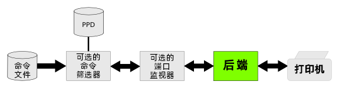

本文档介绍如何为光栅打印机开发打印机驱动程序。主题包括：打印机驱动程序基础，创建新的 PPD 文件，使用筛选器，实现颜色管理，以及添加 macOS 功能。
| 另见 | 程序设计：开发 PostScript 打印机驱动程序 程序设计：筛选器和后端编程 程序设计：PPD 编译器简介 程序设计：光栅 API 参考资料：PPD 编译器驱动程序信息文件参考 技术规范：CUPS PPD 扩展 |
|---|
CUPS 光栅打印机驱动程序包括一个描述设备功能的 PostScript 打印机描述（ PPD ）文件、一个或多个为设备准备打印数据的 筛选器 程序，以及零个或多个用于颜色管理、联机帮助等的支持文件。PPD 文件包括对驱动程序使用的所有筛选器和支持文件的引用。
每当用户打印某个内容时，调度程序，cupsd(8) 将确定打印任务的格式以及将该任务转换为打印机理解的内容所需的程序。CUPS 包括许多常用格式的筛选程序，例如将便携式文档格式（ PDF ）文件转换为 CUPS 光栅数据。图 1 显示了典型打印任务的数据流。
光栅筛选器将 CUPS 光栅数据转换为打印机可以理解的格式，例如 HP-PCL 。CUPS 包括几个支持标准页面描述语言（ PDL ）的示例光栅筛选器。表 1 显示了与 CUPS 捆绑在一起的光栅筛选器及其支持的语言。
| 筛选器 | PDLs | ppdc 驱动类型 | ppdc #include file |
|---|---|---|---|
| rastertoepson | ESC/P, ESC/P2 | epson | epson.h |
| rastertoescpx | ESC/P, ESC/P2, EPSON Remote Mode | escp | escp.h |
| rastertohp | HP-PCL3, HP-PCL5 | hp | hp.h |
| rastertolabel | CPCL, Dymo, EPL1, EPL2, Intellitech PCL, ZPL | label | label.h |
| rastertopclx | HP-RTL, HP-PCL3, HP-PCL3GUI, HP-PCL5, HP-PCL5c, HP-PCL5e | pcl | pcl.h |
可选端口监视器处理特定于接口的协议或编码问题。例如，某些光栅打印机使用 1284.4 通信协议。
后端处理与打印机的通信，将打印数据从最后一个筛选器发送到打印机，并将反向通道数据从打印机中继到上游筛选器。CUPS 包括用于通用直接连接接口和网络协议的后端程序，您可以提供自己的后端以支持自定义接口和协议。
调度器还支持一种特殊的“命令”文件格式，用于向打印机或打印机驱动程序发送维护命令和状态查询。命令打印任务通常使用 PPD 文件中定义的单个命令筛选器程序生成适当的打印机命令并处理打印机的任何响应。图 2 显示了典型命令任务的数据流。
|  |
光栅打印机驱动程序必须提供自己的命令筛选器。
我们建议使用 CUPS PPD 编译器，ppdc(1) 创建新的 PPD 文件，因为它可以为您管理纸张大小和本地化的许多繁琐（且容易出错！）细节。它还允许您从单个源文件轻松支持多个设备。有关更多信息，请参阅 PPD 编译器简介 文档。清单 1 显示了几种类似的黑白 HP-PCL5 激光打印机的驱动程序信息文件。
清单 1："examples/laserjet-basic.drv"
// 包括标准字体和媒体定义
#include <font.defs>
#include <media.defs>
// 包括HP-PCL驱动程序定义
#include <pcl.h>
// 指定此驱动程序使用 HP-PCL 驱动程序...
DriverType pcl
// 通过型号指定驱动程序选项...
ModelNumber ($PCL_PAPER_SIZE $PCL_PJL $PCL_PJL_RESOLUTION)
// 列出支持的字体，在本例中为所有标准字体...
Font *
// 制造商和驱动程序版本
Manufacturer "HP"
Version 1.0
// 支持的页面大小及其页边距
HWMargins 18 12 18 12
*MediaSize Letter
MediaSize Legal
MediaSize Executive
MediaSize Monarch
MediaSize Statement
MediaSize FanFoldGermanLegal
HWMargins 18 12.72 18 12.72
MediaSize Env10
HWMargins 9.72 12 9.72 12
MediaSize A4
MediaSize A5
MediaSize B5
MediaSize EnvC5
MediaSize EnvDL
MediaSize EnvISOB5
MediaSize Postcard
MediaSize DoublePostcard
// 只有模式 3 压缩的黑白输出...
ColorModel Gray k chunky 3
// 支持的分辨率
Resolution - 1 0 0 0 "300dpi/300 DPI"
*Resolution - 8 0 0 0 "600dpi/600 DPI"
// 支持的进纸槽
*InputSlot 7 "Auto/Automatic Selection"
InputSlot 2 "Manual/Tray 1 - Manual Feed"
InputSlot 4 "Upper/Tray 1"
InputSlot 1 "Lower/Tray 2"
InputSlot 5 "LargeCapacity/Tray 3"
// 进纸槽 3 的选项
Installable "OptionLargeCapacity/Tray 3 Installed"
UIConstraints "*OptionLargeCapacity False *InputSlot LargeCapacity"
{
// HP LaserJet 2100 Series
Throughput 10
ModelName "LaserJet 2100 Series"
PCFileName "hpljt211.ppd"
}
{
// LaserJet 2200 and 2300 series 拥有双面打印选项
Duplex normal
Installable "OptionDuplex/Duplexer Installed"
UIConstraints "*OptionDuplex False *Duplex"
{
// HP LaserJet 2200 Series
Throughput 19
ModelName "LaserJet 2200 Series"
PCFileName "hpljt221.ppd"
}
{
// HP LaserJet 2300 Series
Throughput 25
ModelName "LaserJet 2300 Series"
PCFileName "hpljt231.ppd"
}
}
可以使用 DriverType 指令指定标准 CUPS 光栅筛选器，例如：
// 指定此驱动程序使用 HP-PCL 驱动程序
DriverType pcl
表 1 显示每个标准 CUPS 光栅筛选器的驱动程序类型。对于不使用标准光栅筛选器的驱动程序，“custom” 类型与 Filter 指令一起使用：
DriverType custom Filter application/vnd.cups-raster 100 /path/to/raster/filter Filter application/vnd.cups-command 100 /path/to/command/filter
CUPS 使用 ICC 颜色配置文件提供更精确的颜色再现。cupsICCProfile 属性定义可用于给定打印机的颜色配置文件，例如：
Attribute cupsICCProfile "ColorModel.MediaType.Resolution/Description" /path/to/ICC/profile
其中 “ColorModel.MediaType.Resolution” 根据相应的选项选择定义选择器。一个简单的驱动程序可能只为支持的颜色模型定义配置文件，例如，支持灰色和 RGB 的打印机可能使用：
Attribute cupsICCProfile "Gray../Grayscale Profile" /path/to/ICC/gray-profile Attribute cupsICCProfile "RGB../Full Color Profile" /path/to/ICC/rgb-profile
用于概要文件选择的选项可以使用 cupsICCQualifier2 和 cupsICCQualifier3 属性进行自定义。
基于现有标准 RGB 颜色空间的 macOS 打印机驱动程序可以告诉系统在进行颜色管理时使用相应的颜色空间，而不是任意 ICC 颜色配置文件。可以使用 APSupportsCustomColorMatching 和 APDefaultCustomColorMatchingProfile 属性启用此模式：
Attribute APSupportsCustomColorMatching "" true Attribute APDefaultCustomColorMatchingProfile "" sRGB
macOS 打印机驱动程序可以提供 附加属性 来指定打印对话框中的其他选项窗格、打印机图像、帮助手册以及驱动程序软件的选项预设：
Attribute APDialogExtension "" /Library/Printers/Vendor/filename.plugin Attribute APHelpBook "" /Library/Printers/Vendor/filename.bundle Attribute APPrinterIconPath "" /Library/Printers/Vendor/filename.icns Attribute APPrinterPreset "name/text" "*option choice ..."